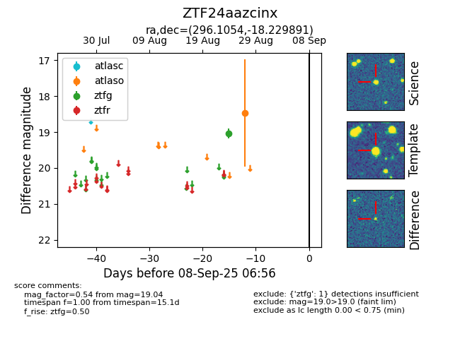

FINK: ZTF24aazcinx
Lasair: ZTF24aazcinx
ALeRCE: ZTF24aazcinx
ZTF24aazcinx (ztf,fink)
equatorial (ra, dec) = (296.1054,-18.22989)
galactic (l, b) = (21.9638,-19.65372)

last atlaso=18.47, ztfg=19.04
1 atlaso, 1 ztfg detections